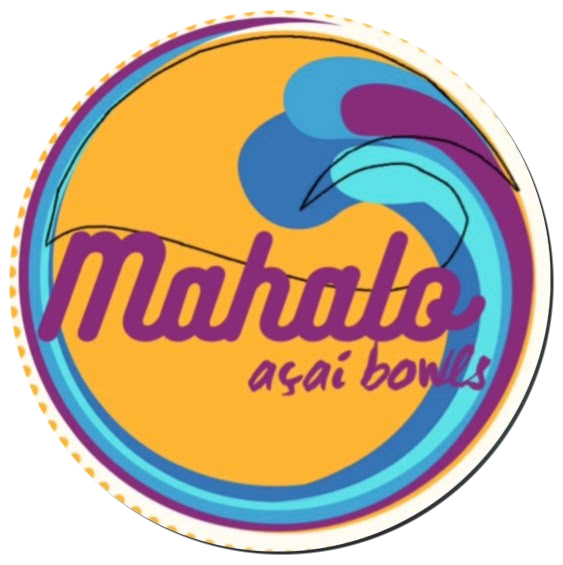

🌴 Site para o cliente
Visualize a Home, o cardápio, o montador e o carrinho.
ABRIR O SITE ↗Prévia de projeto; dados comerciais devem ser validados.
JN Santos Web Studio · Central de acesso ao projeto
Visualize a Home, o cardápio, o montador e o carrinho.
ABRIR O SITE ↗Prévia de projeto; dados comerciais devem ser validados.Altere preços, produtos, links, galeria, imagens e textos. Gere um arquivo atualizado para publicar no GitHub.
ABRIR ADMINISTRADOR ↗Editor local: não possui login nem publica mudanças automaticamente.